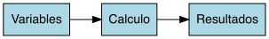

Bienvenidos!
Bogotá R User Group
Simulación de MonteCarlo en R
Universidad del Rosario
Nov 2024
Francesco Giorgetti
INTRODUCCIÓN
Intro
Metodo, usado para resolver problemas que involucran:
- incertidumbre
- aleatoriedad
- complejidad
Herramienta: R: porque?
- extensas librerias estadisticas
- calculo vectorial
- graficas para analizar resultados
Aplicaciones
- estimaciones financieras
- duracion de proyectos
- pronosticos de produccion de O&G
- SAROPS
- Predicción de fallas de equipos de multiples componentes
- Resolver integrales de funciones
- etc etc

Problema
Cuanto tiempo podriamos qudarnos aqui encerrados sin quedarnos sin oxygeno?
- dimensiones del auditorio
- cuantas personas
- una pesona promedio inhala 0.35 lt/min
- nuestros pulmones absorben el 6% del oxigeno en el aireProblema
Cuanto tiempo podriamos qudarnos aqui encerrados sin quedarnos sin oxygeno?
- dimensiones del auditorio
- cuantas personas
- una pesona promedio inhala 0.35 lt/min
- nuestros pulmones absorben el 6% del oxigeno en el aireSolución determinsitica
Cuanto tiempo podriamos qudarnos aqui encerrados sin quedarnos sin oxigeno?
- dimensiones del auditorio
- cuantas personas
- una pesona promedio inhala 0.35 lt/min
- nuestros pulmones absorben el 6% del oxigeno en el airel <- 8
w <- 12
h <- 4
people <- 25
breath <- 0.350
vol <- l * w * h
o2 <- vol * 0.06 * 1000
time <- o2 / (people * breath * 60)
time[1] 43.88571¡¡¡Estamos a salvo!!!
Componentes de la solución
Componentes de la solución
Que sigue?
Metodo, usado para resolver problemas que involucran:
- incertidumbre
- aleatoriedad
- complejidad
Conozco las variables?
Cambio de componentes
Definición
- Definición simple: repetir un experimento N veces.
- ¿Porque debería repetir un experimento?
- por ejemplo, para definir el impacto de variables que desconozco
- ¿No sería suficiente repetir el experimento con valores extremos?
- la combinación de multiples variables es dificil de cuantificar
- MC genera una distribución del reusltado: probabilidad de que algo ocurra
- Cuantos mas experimentos, mas preciso el resultado
CALCULO
Solución Determinsitica
Cuanto tiempo podriamos qudarnos aqui encerrados sin quedarnos sin oxigeno?
- dimensiones del auditorio
- cuantas personas
- una pesona promedio inhala 0.35 lt/min
- nuestros pulmones absorben el 6% del oxigeno en el aireSolución Probabilistica
Cuanto tiempo podriamos qudarnos aqui encerrados sin quedarnos sin oxigeno?
- dimensiones del auditorio
- cuantas personas
- una pesona promedio inhala 0.35 lt/min
- nuestros pulmones absorben el 6% del oxigeno en el aireSolución Probabilistica
Cuanto tiempo podriamos qudarnos aqui encerrados sin quedarnos sin oxigeno?
- dimensiones del auditorio
- cuantas personas
- una pesona promedio inhala 0.35 lt/min
- nuestros pulmones absorben el 6% del oxigeno en el airenn <- 100
l <- rnorm(nn, 8, 1)
w <- rnorm(nn, 12, 1)
h <- rnorm(nn, 4, 0.5)
people <- 25
breath <- rnorm(nn, 0.350, 0.050)
vol <- l * w * h
o2 <- vol * 0.06 * 1000
time <- o2 / (people * breath * 60)
time [1] 42.55042 44.86147 64.11480 41.95359 34.28441 50.24237 73.65971 36.29880
[9] 42.18319 43.34849 37.90405 36.98906 69.84338 60.33882 45.57733 59.86915
[17] 55.29731 46.46947 49.97106 51.67779 66.67051 37.90555 48.40130 33.13488
[25] 38.34503 38.80759 36.93225 28.76004 47.49359 62.75175 35.47129 39.85043
[33] 54.74441 49.40563 47.82842 48.21810 33.40360 31.41058 26.74187 42.29032
[41] 42.63126 39.02950 56.37422 43.01565 32.86348 59.97041 35.66615 35.30381
[49] 44.14836 29.30423 63.89030 40.39167 44.73076 61.09736 41.73457 43.86905
[57] 36.55061 33.69412 30.38110 37.32165 37.62559 28.53412 34.49052 34.93574
[65] 38.88774 54.09431 73.12368 47.51521 69.91283 43.62478 43.91612 34.31071
[73] 31.85895 49.99091 45.38405 47.59880 49.50764 31.14512 35.59695 47.95143
[81] 50.38058 35.36782 42.17383 34.09943 37.51313 52.55712 30.05249 34.84163
[89] 51.19852 35.21091 44.14132 33.31766 39.64189 36.75231 43.38666 32.52565
[97] 38.03613 29.24706 36.17815 46.57552Convergencia
Convergencia
RESULTADOS
Solucion Probabilisitca - Resultado
Solucion Probabilisitca - Resultado
Histograma
Errores Tipicos
dsitribuciones de entrada no representativas
no considerar la dependencia entre variables
utilizar resultados intermedios: valioso, pero con cuidado!
sumar percentiles:
- p50 + p50 = p50
- p90 + p90 ≠ p90
- p10 + p10 ≠ p10
DISTRIBUCIONES
Distribuciones
usa la función random
Distribuciones
usa la función random

Distribuciones - Fit Datos Empiricos
nn <- 25
set.seed(123)
x <- rnorm(nn, 12, 5)
fit <- fitdistrplus::fitdist(x, distr = "norm")
summary(fit)Fitting of the distribution ' norm ' by maximum likelihood
Parameters :
estimate Std. Error
mean 11.833348 0.9276045
sd 4.638023 0.6559153
Loglikelihood: -73.83067 AIC: 151.6613 BIC: 154.0991
Correlation matrix:
mean sd
mean 1 0
sd 0 1Distribuciones - Fit Datos Empiricos
nn <- 25
set.seed(123)
x <- rnorm(nn, 12, 5)
fit <- fitdistrplus::fitdist(x, distr = "gamma")
summary(fit, )Fitting of the distribution ' gamma ' by maximum likelihood
Parameters :
estimate Std. Error
shape 5.4546511 1.4979587
rate 0.4610069 0.1326133
Loglikelihood: -74.43024 AIC: 152.8605 BIC: 155.2982
Correlation matrix:
shape rate
shape 1.0000000 0.9546625
rate 0.9546625 1.0000000Distribuciones - Fit Datos Empiricos
Distribuciones - Fit Cuantiles
Distribuciones - Fit Cuantiles
MUESTREO
Muestreo
Aleatorio VS LHS (Hipercubo Latino)
N = 10, 25, 100, 1000, 10k, 100k
Muestreo
Aleatorio VS LHS (Hipercubo Latino)
N = 100
Muestreo
Aleatorio VS LHS (Hipercubo Latino)
N = 10
Correlación
Las variables pueden estar correlacionadas entre si.
2 formas de incluir la correlación en el muestreo:
- LHS (matriz sigma de correlación)
- Aleatorio (copula)
Impacto: no afecta la media, “estira” la distribución resulatdo
Correlación - Probabilidades
n <- 20 # number of samples
nvars <- 3 # number of variables
# correlation matrix (symmetric!)
sigma <- matrix(rep(0, nvars*nvars), nrow = nvars, ncol = nvars) # uncorrelated
sigma[1,] <- c(1.0, 0.5, 0.0)
sigma[2,] <- c(0.5, 1.0, 0.8)
sigma[3,] <- c(0.0, 0.8, 1.0)
set.seed(123)
corrLHS <- pse::LHS(factors = nvars, N = n, method = "HL", opts = list(COR = sigma, eps = 0.05))
XX <- pse::get.data(corrLHS)
head(XX, 3) I1 I2 I3
1 0.725 0.425 0.175
2 0.925 0.975 0.825
3 0.675 0.925 0.975Correlación - Sigma
Variables en el rango [0, 1]
Correlación - Variables
usa la función de quantiles
Correlación - Resultados
EXTRAS
Aproximación de pi - Codigo
nn <- 1e4
experiment <- data_frame(N = 1:nn) %>%
mutate(X = runif(nn, -1, 1),
Y = runif(nn, -1, 1),
D = sqrt(X^2 + Y^2), # distance from origin
circle = if_else(D <= 1, TRUE, FALSE))
head(experiment, 3)# A tibble: 3 × 5
N X Y D circle
<int> <dbl> <dbl> <dbl> <lgl>
1 1 -0.513 0.812 0.960 TRUE
2 2 0.336 0.349 0.484 TRUE
3 3 -0.165 0.328 0.367 TRUE